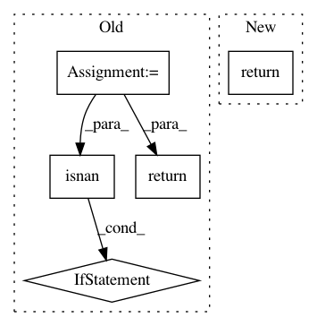

83ea0caeb48b0bcf50f1302a7e0f67ba3e7ce48d,ml/rl/prediction/dqn_torch_predictor.py,ParametricDqnTorchPredictor,policy,#ParametricDqnTorchPredictor#Any#Any#,121
Before Change
1.0 - possible_actions_presence.reshape(1, -1) // type: ignore
) * 1e10
q_scores_softmax_numpy = (
masked_softmax(
q_scores.reshape(1, -1),
possible_actions_presence.reshape(1, -1),
self.softmax_temperature,
)
.detach()
.numpy()[0]
)
if (
np.isnan(q_scores_softmax_numpy).any()
or np.max(q_scores_softmax_numpy) < 1e-3
):
q_scores_softmax_numpy[:] = 1.0 / q_scores_softmax_numpy.shape[0]
return DqnPolicyActionSet(
greedy=int(torch.argmax(q_scores)),
softmax=int(np.random.choice(q_scores.size()[1], p=q_scores_softmax_numpy)),
)
def policy_net(self) -> bool:
return False
After Change
)
q_scores = q_scores.reshape(1, -1)
return self.policy_given_q_values(
q_scores, self.softmax_temperature, possible_actions_presence
)
@staticmethod
def policy_given_q_values(
q_scores: torch.Tensor,
In pattern: SUPERPATTERN
Frequency: 5
Non-data size: 5
Instances
Project Name: facebookresearch/Horizon
Commit Name: 83ea0caeb48b0bcf50f1302a7e0f67ba3e7ce48d
Time: 2019-08-13
Author: czxttkl@fb.com
File Name: ml/rl/prediction/dqn_torch_predictor.py
Class Name: ParametricDqnTorchPredictor
Method Name: policy
Project Name: biolab/orange3
Commit Name: 43429311a695f614d4b2af982c3919d8e687d784
Time: 2017-08-18
Author: janez.demsar@fri.uni-lj.si
File Name: Orange/distance/__init__.py
Class Name: MahalanobisModel
Method Name: compute_distances
Project Name: Ambrosys/glyph
Commit Name: b25ea4418ee72f673a67615a32f866bd1fc6e1d7
Time: 2017-02-20
Author: mquade@uni-potsdam.de
File Name: glyph/assessment.py
Class Name:
Method Name: replace_nan
Project Name: biolab/orange3
Commit Name: e139774089d7a49df522f9bbb9e942ce3b3c325e
Time: 2020-02-06
Author: janez.demsar@fri.uni-lj.si
File Name: Orange/widgets/unsupervised/owdistancematrix.py
Class Name: DistanceMatrixModel
Method Name: color_for_label
Project Name: senarvi/theanolm
Commit Name: 97a8b233d596ac0c5351e8984171a05aa907be12
Time: 2015-10-01
Author: seppo.git@marjaniemi.com
File Name: theanolm/src/theanolm/textscorer.py
Class Name: TextScorer
Method Name: score_sentence